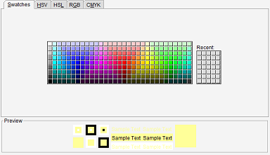

Selection Color
Menu path: Settings > Settings > Selection Colors
Change the color used to indicate an item has been selected.

You have multiple ways to select the color. "Swatches" is the easiest tab to use as you can simply click
on one of the colors in the table. The other tabs allow for much more precision, ideal if you are rally looking
for an exact shade of grey.
The preview reflects your selection. Press "Save" once you are satisfied.